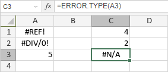

ERROR.TYPE funkcija
ERROR.TYPE funkcija je jedna od informacionih funkcija. Koristi se za vraćanje numeričke reprezentacije jednog od postojećih tipova grešaka.
Sintaksa
ERROR.TYPE(error_val)
ERROR.TYPE funkcija ima sledeći argument:
| Argument | Opis |
|---|---|
| error_val | Vrednost greške. Moguće vrednosti su prikazane u tabeli ispod. |
error_val argument može biti jedna od sledećih vrednosti:
| Vrednost greške | Numerička reprezentacija |
|---|---|
| #NULL! | 1 |
| #DIV/0! | 2 |
| #VALUE! | 3 |
| #REF! | 4 |
| #NAME? | 5 |
| #NUM! | 6 |
| #N/A | 7 |
| #GETTING_DATA | 8 |
| Ostalo | #N/A |
Napomene
Kako primeniti ERROR.TYPE funkciju.
Primeri
Slika ispod prikazuje rezultat koji vraća ERROR.TYPE funkcija.
